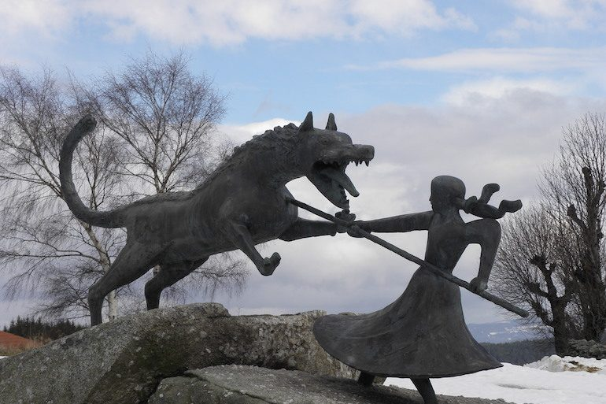

La bête du Gévaudan
La bête du Gévaudan (ancien nom de la Lozère) aurait tué une centaine de personnes entre 1764 et 1767.
Tuant parfois des moutons, souvent des jeunes enfants. On envoyant plusieurs chasseurs à sa poursuite mais aucun ne réussit à le retrouver.
Elle se précipitait pour enlever les enfants dont on retrouvait parfois le corps et la tête détachés l'un de l'autre.
Le mystère reste entier quand à véritable nature: Etait-ce un loup de taille immense ou bien un tueur en série revêtu d'une peau de loup ?
Le pere de la famille Chastel, Jean de Chastel, fut accusé d'être l'auteur des meurtres mais le mystere reste entier...
- une grande tache en forme de coeur qui est tout à fait caractéristique des loups
- des pattes "très puissantes"
- un pelage brun "avec une raie noire sur le dos"
- des dents conséquentes"
- "une immense langue de 37,8 cm"
